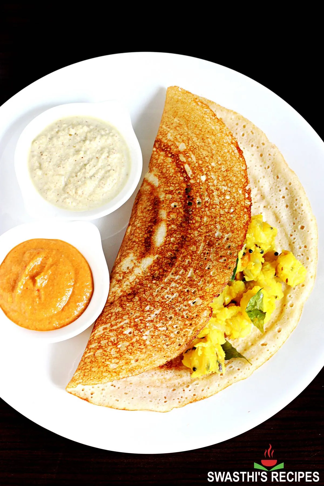

Home
Dosa Recipe

Description
The traditional process to make dosa starts by soaking rice and lentils, which are later ground to a batter and fermented overnight in a warm place. After a good fermentation, the batter increases in volume, becomes light with plenty of small air pockets and develops a slight tangy flavor.
Ingredients
For the dosa batter
- 1 cup whole, skinned urad dal
- 3 cups par-boiled rice stores sell this as Idli rice too
- 1 tablespoon Salt
To make dosas
- 4 cups of fermented dosa batter
- 1 cup of water more or less
- 4 tbsp of gingelly oil Indian sesame oil
Instruction
To Make Dosa Batter
- Soak the rice and dal separately for 3 hours
- Grind dal first into a smooth consistency adding enough water
- Grind rice into a smooth batter by adding just enough water to get it going
- Combine the two, add salt, and let it ferment in a large enough bowl lightly covered, for about 6-8 hours in a warm place
- * You can increase rice to four cups if using good quality urad dal but it takes experience and practice to tell if that's the case so go with these proportions as you start out
To Make Dosa
- Add enough water to the fermented batter until you have a smooth, pouring consistency. Make sure the batter is not too watery though, it should be thick-ish but fall off your spoon easily.
- Heat a tawa or iron griddle and grease with the oil lightly. Pour about 1/2 cup batter to the centre of the tawa.
- Using the back of your ladle, gently spread the batter with a circular motion from the centre towards the sides of the tawa.
- This requires some practice but is not hard at all. As you can see, I have made dosas enough times to actually do a decent job with my left hand while taking pictures with my right. Ok, I'll stop showing off now.
- Since we are not making very crispy dosas, don't spread it too thin. The dosa should be more or less evenly thick.
- Drizzle about 1 tsp of oil around the edges of the dosa and add a few sprinkles on the top as well.
- If your tawa is greased adequately and is not sticky, the edge of the dosa will start to come off the pan in about 1 minute or so. Use a spatula to gently lift the dosa
- and flip it over. Cook the other side for another 40 seconds or so and remove from pan.
- Serve with dosa podi, chutney, sambar, tiffin sambar, or anything that takes your fancy. I can eat dosa with pretty much anything!